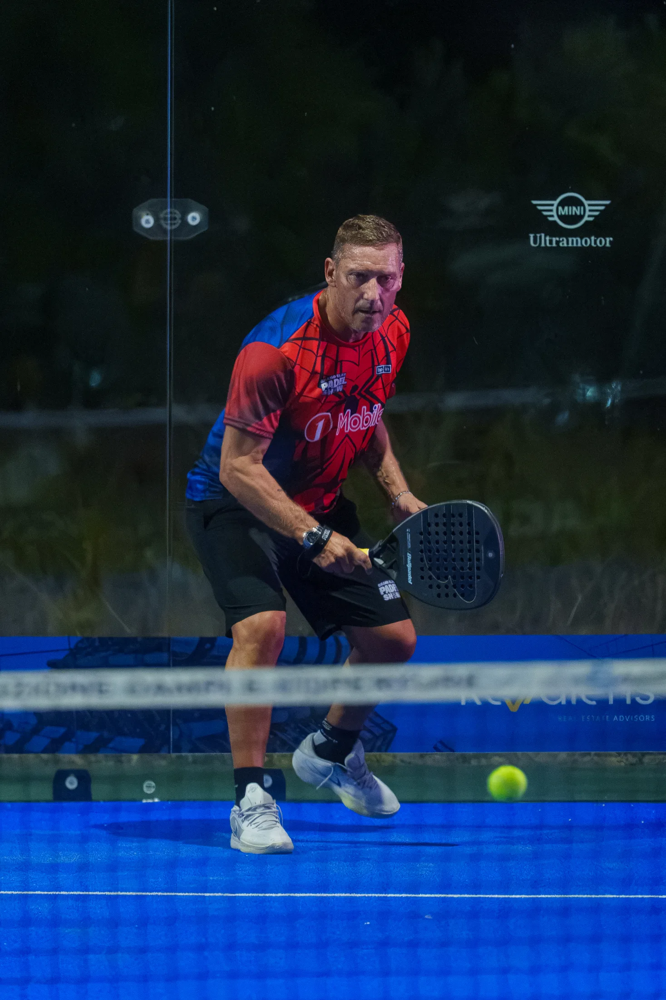

PADEL
PADEL TRA LEGGENDE
Raccontare questo evento di padel è stato, prima di tutto, un'esperienza particolare per me. Trovarmi a fotografare alcune delle leggende che per anni ho visto sui campi da calcio mi ha permesso di vi
Anno
Cliente
Servizi
Output
Gallery